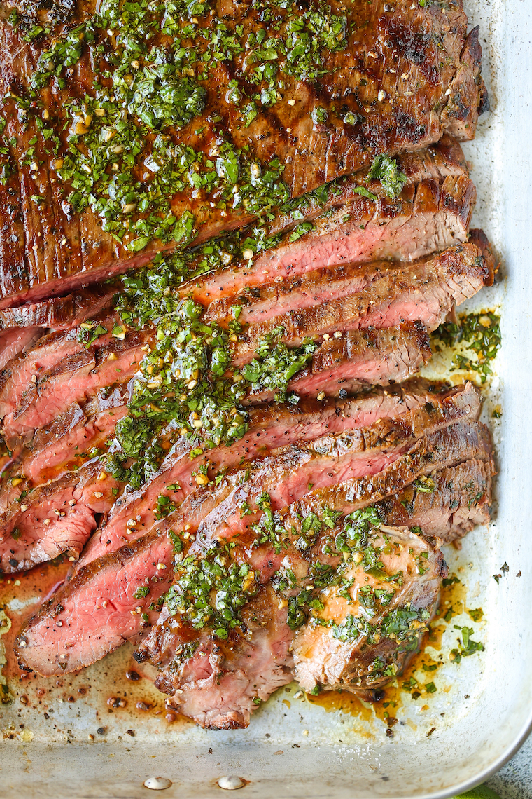

Carne Asada

Description
Cilantro, olive oil, soy sauce, orange + lime juice, garlic, jalapeno and cumin make for the easiest and most flavorful marinade. SO SO GOOD.
Ingrediants
- 1/2 cup chopped fresh cilantro leaves
- 1/3 cup olive oil
- 1/4 cup reduced sodium soy sauce
- Juice of 1 orange
- Juice of 1 lime
- 4 cloves garlic, minced
- 1 jalapeno, seeded and diced
- 1 teaspoon ground cumin
- Kosher salt and freshly ground black pepper, to taste
- 1 1/2 pounds flank steak
Steps
- In a medium bowl, combine cilantro, olive oil, soy sauce, orange juice, lime juice, garlic, jalapeno, cumin and 1 teaspoon pepper; set aside 1/2 cup of the mixture in the refrigerator until ready to serve.
- In a gallon size Ziploc bag or large bowl, combine steak and remaining cilantro mixture; marinate for at least 4 hours to overnight, turning the bag occasionally. Drain the steak from the marinade.
- Preheat grill to medium high heat. Using paper towels, pat both sides of the steak dry; season with salt and pepper, to taste.
- Add steak to grill, and cook, flipping once, until desired doneness, about 6 minutes per side for medium rare. Let rest 5 minutes.
- Thinly slice steak against the grain and serve with reserved 1/2 cup cilantro mixture.